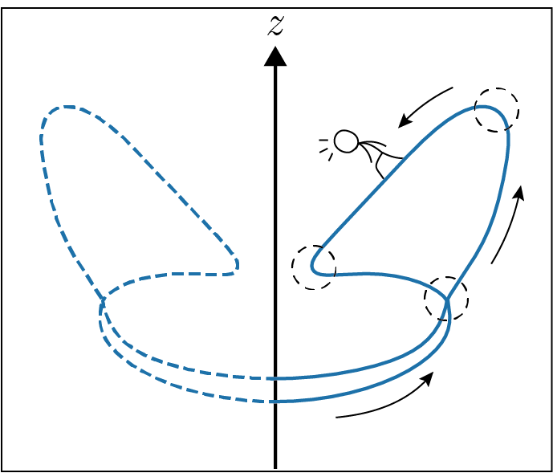

Kazuki Koga

Department of Mathematics,
Kyoto University
209 Graduate School of Science Bldg No.4
Kyoto 606-8502, JAPAN
Email: k.koga at math dot kyoto-u.ac.jp
I am a postdoctoral researcher at Kyoto University working with Prof. Takashi Sakajo. Prior to that, I received my doctoral degree in 2020 under the supervision of Prof. Toshio Aoyagi.
My research interests include: numerical solutions of PDEs and BIEs, moving interface problems, approximations of singular integrals, mesh refinement, signal processing, fluid mechanics, numerical optimization, and GPU computing.
Employment:
- Department of Mathematics, Kyoto University
- Postdoctoral Researcher, Dec 2020 - present
- Research Assistant, Apr 2020 - Nov 2020
- Office Assistant, Apr 2019 - Mar 2020
Education:
- Doctor of Informatics, Kyoto University 2020
- Master of Informatics, Kyoto University 2016
- Bachelor of Economics, Kyoto University 2013
Visiting Appointments:
- Department of Mathematics at UC Berkeley (Host: Prof. Jon Wilkening), Jul 2018 - Dec 2018
- ICERM at Brown University (Mentor: Prof. Jon Wilkening), Feb 2017 - Apr 2017
Publications:
- Research Papers
- K. Koga, Flexible reparametrization of periodic plane curves via time-evolving dummies, in preparation.
- K. Koga and J. Wilkening, A new spatio-temporal discretization of axisymmetric vortex sheets with surface tension, in preparation.
- T. Uda, T. Sakajo, M. Inatsu and K. Koga, Morphological identification of atmospheric blockings by topological flow data analysis, in revision.
- K. Koga, Signal processing approach to mesh refinement in simulations of axisymmetric droplet dynamics, J. Comput. Appl. Math., 383, 113131 (2021):DOI.
- Book Chapters
- K. Koga and M. Funakoshi, Recent Progress in Simulations of 3D Vortex Sheets with
Surface Tension, In Mathematical Insights into Advanced Computer Graphics
Techniques, pp.119--129, Springer Singapore, 2019.